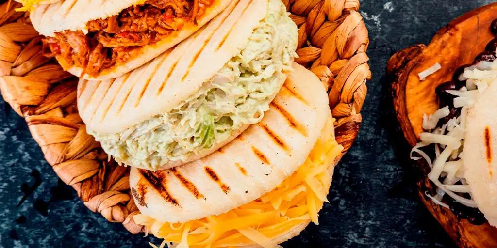
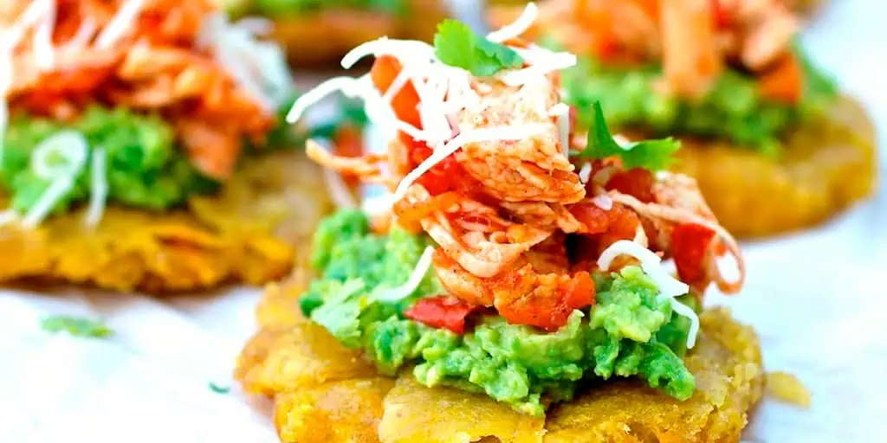

É uma sopa feita à base de milho, batatas, frango, creme de leite, cebola, alho e alcaparras, sendo servida com arroz e abacate. Esse prato carrega os sabores típicos dos povos andinos e proporciona bem-estar e saciedade para quem a consome.

Arepas
As arepas são parecidas com panquecas, feitas com massa de milho. Elas estão presentes em todo território colombiano e são consumidas tanto na hora do café da manhã, recheadas ou não, como prato principal, acompanhamento ou lanche.

Patacones
Os patacones são pedacinhos de banana-da-terra fritos bem crocantes, em forma de cestinha. Normalmente são servidos com queijos, guacamole, vinagrete ou qualquer outro tipo de recheio. Simples e prático, é um prato super tradicional, servido como aperitivo ou petisco.